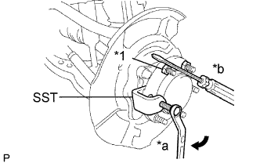
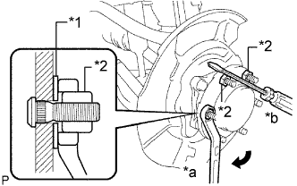

FRONT AXLE HUB BOLT > REPLACEMENT |
| 1. REMOVE FRONT WHEEL |
| 2. REMOVE DISC BRAKE CYLINDER ASSEMBLY LH |
 |
Using a union nut wrench, disconnect the brake tube from the disc brake cylinder assembly.
 |
Remove the 2 bolts and disc brake cylinder assembly.
| 3. REMOVE FRONT DISC |
 |
Place matchmarks on the disc and axle hub if planning to reuse the disc.
| *1 | Matchmark |
Remove the front disc.
| 4. REMOVE FRONT AXLE HUB BOLT LH |
|  |
Using SST and a screwdriver or equivalent, hold the screwdriver and remove the front axle hub bolt.
| *1 | Nut |
| *a | Turn |
| *b | Hold |
| 5. INSTALL FRONT AXLE HUB BOLT LH |
|  |
Insert a new hub bolt.
Temporarily install a washer and hub nut to the hub bolt as shown in the illustration.
| *1 | Washer |
| *2 | Nut |
| *a | Turn |
| *b | Hold |
Using a screwdriver or equivalent, hold the hub and turn the hub nut until the bottom surface of the hub bolt head touches the axle hub.
Remove the hub nut and washer.
| 6. INSTALL FRONT DISC |
Align the matchmarks and install the front disc.
| 7. INSTALL DISC BRAKE CYLINDER ASSEMBLY LH |
Install the disc brake cylinder assembly with the 2 bolts.
Using a union nut wrench, connect the brake tube to the disc brake cylinder assembly.
| 8. INSTALL FRONT WHEEL |